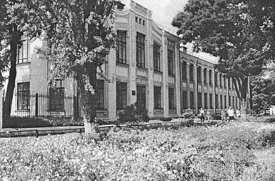
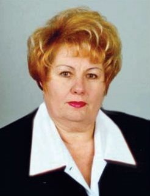

Новомосковський Ліцей №11

| Коротка інформація |
| Наш ліцей |
|---|
|  Найперше фото закладу |
| Коротка інформація | |
| Адміністрація закладу | |
|---|---|
|  Директор, Третьякова Т. М. | |
| Директор | Третьякова Т. М. |
| Заступник з НВР | Кросікова О. З. |
| Заступник з НВР | Махно О. В. |
| Заступник з НВР | Походєєва Л. О. |
| Заступник з НВР | Кросікова О. З. |
| Заступник з виховної роботи | Іващенко І. В. |
| Заступник з господарської роботи | Дахова Н. М. |
| Практичний психолог | Скороход Д. О. |